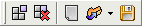

Liste prédéfinie (job)
Ant Renamer peut stocker et récupérer des listes prédéfinies d'opérations, appelées ici "jobs".
Ils peuvent être gérés depuis la page "Opérations".
En plus de la barre d'outils Fichiers qui est toujours visible, une barre d'outils pour gérer ces jobs est affichée :

Voici ses commandes :
- Le bouton "Ajouter au job" ajoutera l'action sélectionnée et ses paramètres à la liste.
- Le bouton
 "Supprimer la sélection" retirera de la liste les éléments qui sont sélectionnés.
"Supprimer la sélection" retirera de la liste les éléments qui sont sélectionnés.
- Le bouton
 "Vider le job" retirera de la liste toutes les actions prédéfinies.
"Vider le job" retirera de la liste toutes les actions prédéfinies.
- Le bouton
 "Ouvrir" affichera une fenêtre standard de sélection de fichier, vous permettant de sélectionner
un fichier de job à charger dans la liste.
"Ouvrir" affichera une fenêtre standard de sélection de fichier, vous permettant de sélectionner
un fichier de job à charger dans la liste.
- Le bouton
 "Sauver" affichera une fenêtre standard de sélection de fichier, vous permettant de choisir où
sauver le contenu de la liste pour une utilisation ultérieur.
"Sauver" affichera une fenêtre standard de sélection de fichier, vous permettant de choisir où
sauver le contenu de la liste pour une utilisation ultérieur.
Ces fichiers de jobs peuvent être utilisés pour combiner de multiples actions dans un seul processus de renommage.
Ils peuvent être sauvés pour être réutilisés plus tard, ou pour être utilisés depuis la ligne de commande.
Ils sont stockés en tant que fichiers XML, mais ils ont une extension ".arb" (signifiant "Ant Renamer Batch").
La liste des actions actuellement planifiées est affichée dans le panneau inférieur, appelé "Contenu du job".
S'il n'est pas visible, vous pouvez l'afficher en cliquant sur la case à cocher à gauche de son titre.
Vous pouvez déplacer les éléments vers le haut et vers le bas de la liste par drag & drop ou en utilisant les quatre icônes additionnelles
qui apparaissent dans la barre d'outils lorsque le panneau de job est visible.
Après avoir été ajouté, un élément ne peut pas être modifier. Pour cela vous devez l'enlever, redéfinir ses paramètres et l'ajouter à nouveau.